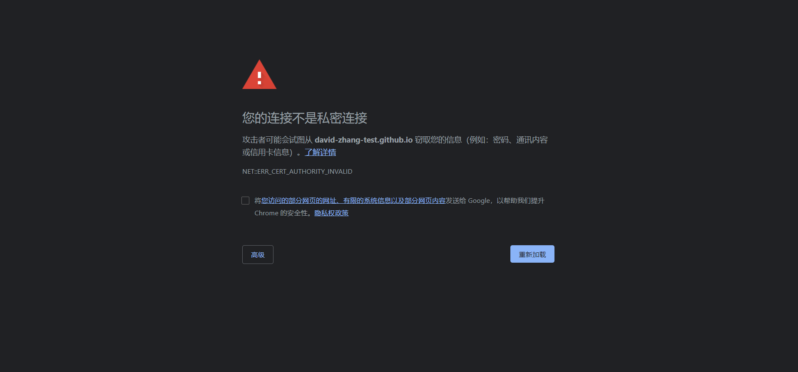

好久没有发文了，因为我又去水程序去了。。。
在国内，由于某些众所周知的原因，导致原先的在美国的github服务器访问出现了很多问题。

你可能会看到这样的warning（虽然程序员从不在乎warning，我们只在乎error）
这些warning有时会弹出，有时不会。如果你科学上网一下，就不会弹出了。所以我怀疑是github的服务器在中国大陆的访问受到了一些限制。
为了我还能高高兴兴地写文章，你们还能开开心心地看文章（但你们从来不看对吧），我花了些时间，把博客和个人网站迁移了。
新个人网站：http://davidzhangtest.gitee.io/main/
新博客网站：http://davidzhangtest.gitee.io/my-blog/
现在这个是一个在国内的服务器了，稳定性有很大改善，访问速度也有提升。
我还会继续更新文章的，欢迎访问关注。